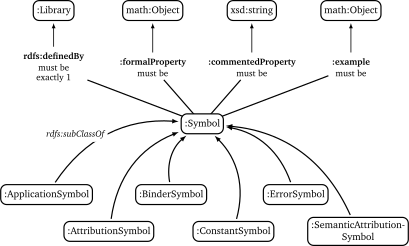

This document specifies RDF encodings for OpenMath objects and Content Dictionaries that allow mathematical objects and symbol definitions to be first-class citizens on the Web of Data.
Ontology for OpenMath objects
The RDF data model for OpenMath objects is specified as an OWL ontology.
The ontology was developed by starting with the OpenMath XML
serialization and mapping of its elements like OMV or OMA to classes
with speaking names like Variable or Application and by modelling
their attributes as RDF properties.
Basic OpenMath objects
Integers, floating point numbers, character strings and byte arrays are
directly represented using typed RDF literals. They are modelled by the
class :Literal with the property :value for the associated values.
The ontology does not yet restrict the range of :value, and hence,
besides the core OpenMath literal types xsd:integer (Integer),
xsd:double (IEEE floating point number), xsd:string (Character
string) and xsd:base64Binary (Byte array), allows other datatypes like
xsd:int (32-bit integers) or xsd:time.
For ensuring the compatibility with OpenMath 2 only the RDF types of
core OpenMath literals should be used. To enforce this it is also
possible to either restrict the range of :value by a union class (in
Manchester OWL Syntax) like
xsd:integer or xsd:double or xsd:string or xsd:base64Binaryor by defining subclasses of :Literal like :IntegerLiteral and
others.
The OpenMath-RDF encoding also omits the hexadecimal encodings for numbers in favour of using standard RDF literal types. If support for hexadecimal literals is required then custom RDF datatypes can be used.
Variables are represented as instances of class :Variable with a
property :name. The variable x can, for example, be
represented as:
_:x a :Variable ; :name "x" .It is allowed to freely choose the identification of RDF nodes in
OpenMath-RDF as it has no influence of the semantics. Consequently,
instead of using an anonymous RDF node _:x for the variable in the
previous example, it could have been also named with a URI like
<var:x> or http://example.org/x to allow global references.
According to the OpenMath standard the scheme <cdbase/cd#name> can be
used to create canonical URIs for symbols. Accordingly the symbol sin
from the content dictionary transc1 can be encoded as
http://www.openmath.org/cd/transc1#sin. OpenMath-RDF uses this kind
of URIs to encode symbols and not the individual attributes cdbase,
cd and name as used by the XML encoding.
Compound objects
A fundamental difference between XML and RDF lies in the fact, that XML uses a native tree structure while RDF is graph-based. For compound objects OpenMath-XML can rely on the tree structure to represent syntax trees of OpenMath expressions.
For the representation of application objects (OMA) in RDF the additional property :arguments is required. It
references a list of arguments while the property :operator determines
the function that is applied to to the arguments. A similar
representation is also used for the other compound objects binding
(OMBIND), attribution (OMATTR) and error (OME). This is in line with
the OpenMath JSON encoding that also uses additional properties to
represent parent-child relationships.
The resulting RDF representation of the expression sin(x + y) is shown in following example.
sin(x + y)@prefix : <http://numerateweb.org/vocab/math#> .
[] a :Application ;
:operator <http://www.openmath.org/cd/transc1#sin> ;
:arguments (
[ a :Application ;
:operator <http://www.openmath.org/cd/arith1#plus> ;
:arguments (
[ a :Variable ; :name "x" ] [ a :Variable ; :name "y" ]
)
]
) .Caused by the additional
properties the syntax is less compact as with the XML format but offers
stronger semantics. For example, the meaning of the child elements is
directly expressed through the properties :operator and :arguments.
References
References are used within the XML and binary encodings to share OpenMath objects between multiple expressions. These references are basically not required in RDF since the linking of objects is directly supported through URIs or anonymous identifieres (blank nodes).
Nonetheless, OpenMath-RDF defines the class :Reference with the
property :target. This opens up the possibilty to give OpenMath
objects multiple names and to use the references as some kind of
symbolic links as known by typical file systems.
The function f(x) = x^2 is mainly represented as RDF node
with the URI http://example.org/square-func
(Example: Reference to a function).
By using a named reference the function is also available via the URI
http://example.org/power-2.
@base <http://example.org/> .
@prefix : <http://numerateweb.org/vocab/math#> .
<square-func> a :Binding ;
:binder <http://www.openmath.org/cd/fns1#lambda> ;
:variables (_:x) .
:body [
a :Application ;
:operator <http://www.openmath.org/cd/arith1#power> ;
:arguments (_:x 2)
] .
_:x a :Variable ; :name "x" .
<power-2> a :Reference ; :target <square-func> .Derived objects
To embed non-OpenMath objects into OpenMath objects of type
attribution or error derived OpenMath objects can be represented
by instances of class :Foreign. Its property :value has the range
rdf:XMLLiteral and the property :encoding uses an xsd:string to
specify the content type. This allows to accept simple character strings
as well as complete XML documents with nested OpenMath objects.
Transformation between OpenMath-XML and OpenMath-RDF
For the transformation from XML to RDF an operator T can be defined. It converts the XML encoding of an OpenMath object OXML to an RDF graph T(OXML) containing the equivalent RDF encoding. The rules of the transformation operator T are summarized in Table #tab:omxml-omrdf.
The mapping is recursively defined by using the operator T for the top-level element and all of its sub elements. The generated triples by each invocation of T are inserted in the resulting RDF graph. The main node in each transformation rule, which is always the subject of the first triple, is the result value of the operator invocation and is used for subsequent transformations.
To accomodate for the differences in the encoding of numbers and URIs between OpenMath-XML and OpenMath-RDF the following helper functions are used to define the operator T:
- DEC(HEX)
-
converts a floating point number
HEXin hexadecimal encoding into an equivalent decimal representation. This function is necessary because OpenMath-RDF only supports XML-Schema-Datatypes and hence no hexadecimal encodings for floating point numbers. - BASE10(INT)
-
converts an integer
INTin decimal or hexadecimal representation to a decimal integer. - RESOLVE(URI)
-
creates an absolute URI according to the rules defined in section 5. "Reference Resolution" of the URI specification [S. 27 ff.]. This function is necessary because RDF only supports absolute URIs as identifiers.
If, for example, the operator T directly creates a Turtle document then the resolution of URIs is not necessary since the Turtle parser resolves URIs automatically against a base URI according to sections 6.3 "IRI References" and 7. "Parsing" of the Turtle specification. This base URI has to be specified in accordance to the source OpenMath-XML document.
Therefore an OpenMath-XML document at the address
http://example.org/with the content<OMOBJ><OMR href="named" /></OMOBJ>can be translated into an equivalent Turtle document with the content
@base <http://example.org/> . @prefix : <http://numerateweb.org/vocab/math#> . [] a :Reference ; :target <named> .The relative URI
<named>can be kept in the document and by specifying the base URI@base http://example.org/correctly resolved to an absolute URI by a Turtle parser.With a few exceptions (numbers, URIs, referenes) the operator T defines an unambiguous mapping between XML and RDF. Therefore an inverse operator T -1 for converting RDF to XML can be easily defined. For handling the exceptions, floating point numbers and integers can either be translated into a decimal or a hexadecimal encoding as OpenMath-XML supports both formats. References to other OpenMath objects can either be directly resolved and copies of the referenced objects in OpenMath-XML format included or
<OMR>elements can be created with respective relative or absolute URIs.
| OpenMath-XML — OXML | OpenMath-RDF — T(OXML) |
|---|---|
Basic objects |
|
|
|
|
|
|
|
|
|
|
|
|
|
|
|
Compound objects |
|
|
|
|
|
|
|
|
|
Named objects & references |
|
|
|
|
|
Derived objects |
|
|
|
Query OpenMath with SPARQL
OpenMath-RDF allows to use SPARQL as query language to traverse, filter and transform mathematical objects. With SPARQL 1.1 it is also possible to use path expressions for recursive traversals.
As an example the SPARQL query
SELECT ?result WHERE {
?result (math:arguments|math:symbol|...|rdf:rest)+ ?o .
{
?o <>? <http://www.openmath.org/cd/arith1#sum> .
} UNION {
?o <>? <http://www.openmath.org/cd/arith1#product> .
} FILTER NOT EXISTS {
[] math:arguments|math:symbol|...|rdf:rest ?result .
}
}finds all root expressions that either contain a sum or a product
symbol.
The property path math:arguments|math:symbol|…|rdf:first is a
shortened version of the path
math:arguments|math:symbol|math:operator|math:target|math:variables|
math:binder|math:body|math:attributeKey|math:attributeValue|
rdf:rest|rdf:firstwhich ensures that only properties of mathematical objects are traversed
by the expression. It would also be possible to just use something like
<>|!<> if it is acceptable to traverse any edge within the RDF graph.
The property path <>? is a trick and expected to always be empty. It
is used to avoid the repetition of the long property path
math:arguments|math:symbol|…|rdf:first for traversing the expression
and also may lead to faster execution times if the SPARQL engine is not
able to properly optimize the queries.
Representation of Content Dictionaries in RDF
OpenMath Content Dictionaries are usually encoded as XML documents. In combination with the RDF encoding introduced in the previous sections Content Dictionaries may also be represented as linked data.

The core of the vocabulary are classes for different types of
mathematical symbols as defined by the OpenMath standard which are
represented by subclasses of Symbol. Each symbol is defined
(rdfs:definedBy) by a Content Dictionary that the ontology models as
Library. Formal properties (formalProperty) of the symbols and usage
examples (example) refer to mathematical objects as defined by the
OpenMath-RDF ontology.
To verify the RDF encoding based on OpenMath-RDF and the meta data ontology 214 Content Dictionaries with 1578 symbols published on the OpenMath web site were converted to an RDF representation[1].
Related work
In 2003 Marchiori [marchiori2003] outlined the idea and possible applications of representing mathematical expressions as part of the Semantic Web. Advantages are seen in an RDF representation that enables the reuse of Semantic Web languages and tools to support functions like search, annotation or inference on mathematical knowledge. Basic ideas for a direct conversion of MathML to RDF without an explicit ontology are also given in the paper. Marchiori also names the possible computability as a ``cool functionality'' of mathematical formulas on the Semantic Web.
In 2011 Lange [lange2011] worked on methods for the collaborative creation and exchange of semiformal mathematical content. The authors introduce the OMDoc ontology (Open Mathematical Documents) for the exchange of mathematical statements and theories on the internet. The ontology is defined in OMDoc itself since the authors state that the expressiveness of OWL is insuffient for the representation of all aspects of OMDoc. Additional to OMDoc an OWL based ontology for the description of OpenMath Content Dictionaries is introduced. It is able to represent metadata about symbols and their usage within mathematical expressions but not the expressions themselves. Both ontologies are used to implement a wiki system called SWiM (Semantic Wiki for Mathematical Knowledge Management) for the collaborative work on mathematical documents.
In 2012 Ferré [ferre2012] proposed a lightweight RDF vocabulary for the
representation of mathematical expressions mainly for the use case of
content-based search. The vocabulary is solely based on existing RDF and
RDFS properties and hence there is no explicit ontology. The property
rdf:type is used as constructor of mathematical operations where each
object is an instance of rdfs:Container and the properties rdf:_1,
rdf:_2, …, rdf:_n are used to represent its arguments.
For example, the expression (a + 2 ) * 3 would be represented as
[ a math:Times ;
rdf:_1 [ a math:Plus ; rdf:_1 _:a ; rdf:_2 2 ] ; rdf:_2 3 ] .
_:a rdfs:label "a" .in Turtle format.
The syntax is comparable to the notation used by the programming language Lisp that may represent the expression as
(math:Times (math:Plus a 2) 3)Due to the missing ontology, semantics of the RDF representation is limited, for example, constants and variables are only implicitly distinguishable based on their node kind (constants are RDF literals and variables are blank nodes with a label). Since the representation was developed for structural search, a language construct for binding the variables of a lambda function as required for computations is not supported.
In 2014 Muñoz et al. [munoz2014] developed an ontology for mathematical expressions that also supports references from mathematical models to elements of a domain model. However, the approach uses a highly proprietary vocabulary and is not based on any standards like MathML or OpenMath.
References
-
[marchiori2003] MARCHIORI, Massimo: The Mathematical Semantic Web. Version: 2003. In: ASPERTI, Andrea (ed.) ; BUCHBERGER, Bruno (ed.) ; DAVENPORT, James H. (ed.): Mathematical Knowledge Management Bd. 2594. Berlin, Heidelberg
-
[lange2011]LANGE, Christoph: Enabling Collaboration on Semiformal Mathematical Knowledge by Semantic Web Integration, Jacobs University Bremen, Diss., 2011
-
[ferre2012]FERRÉ, Sébastien: An RDF Vocabulary for the Representation and Exploration of Expressions with an Illustration on Mathematical Search. https://hal.inria.fr/hal-00812197. Version: 2012
-
[munoz2014] MUÑOZ, Edrisi ; CAPÓN-GARCÍA, Elisabet ; LAÍNEZ-AGUIRRE, José M. ; ESPUÑA, Antonio ; PUIGJANER, Luis: Using mathematical knowledge management to support integrated decision-making in the enterprise. In: Computers & Chemical Engineering 66 (2014), Juli, 139-150. http://dx.doi.org/10.1016/j.compchemeng.2014.